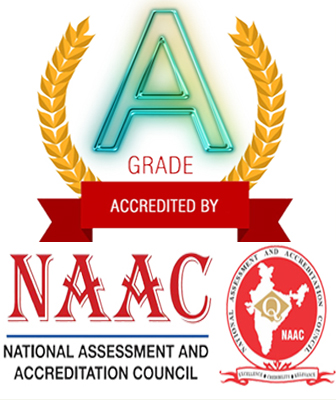
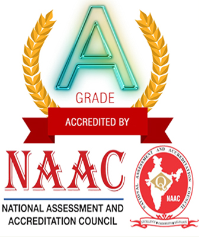
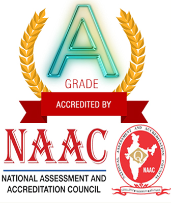
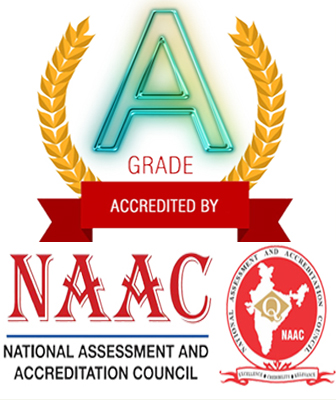

NBKR Institute of Science & Technology established in 1979 is an Autonomous Institute affiliated to JNT University Anantapur. This Institute is reaccredited by NAAC (UGC) for the second cycle with “A” grade. All B.Tech courses are accredited by National Board of Accreditation (NBA) under Tier 1. UGC awarded the status of “College with Potential for Excellence (CPE)” to our Institute.
The Institute offers B.Tech programmes in Computer Science & Engineering,Electronics & Communication Engineering, Electrical & Electronics Engineering, Mechanical Engineering,Civil Engineering, Information Technology and Artificial Intelligence & Data Science. The Institute has an R&D Cell and recognised research centres of JNT University Ananthpur offering Ph.D programmes.
Guest lectures are regularly organized on latest trends by eminent industry experts, Entrepreneurs and HR managers.
The Institute is spread across a lush green 184 acre campus that houses academic blocks, Boys and Girls hostels, Open air auditorium, sports complex, staff quarters etc. The Institute focuses on skill and professional development of the graduates through student run clubs, technical associations. Professional chapters like IEEE, ISTE, IETE, CSI exist in our Institute.
Department laboratories and Computer Centre has state-of-the-art equipment to fulfil the needs of the researchers, students and faculty. The central library is well-stocked with books, journals, magazines and news papers. It subscribes thousands of e-journals , e-books. The e-resources can be accessed through the campus network.
There are adequate opportunities for co-curricular and extra-curricular activities helping students gain overall skills. Industrial visits and relevant field visits expose the students to hands-on learning experience.
Industry Institute Partnership Cell (IIP Cell) caters the needs of the Institute and Industry by way of internships, consultancy.
| Position | Name |
|---|---|
| Chairman | Dr.Y.Venkatarami Reddy |
| Correspondent | Sri Nedurumalli Ram Kumar |
| Director | Dr. V. Vijaya Kumar Reddy |